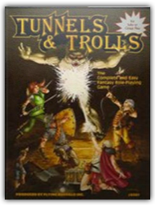
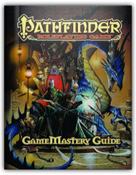
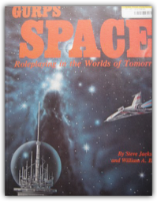
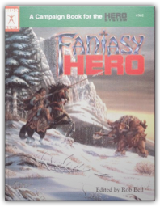
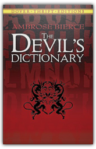
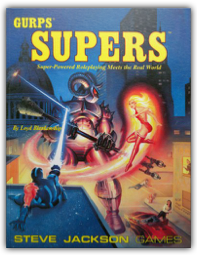

|

Tunnels and Trolls
Ken St. Andre

The fundamental framework for adventuring in Tunnels & Trolls is the concept of an underground tunnel complex wherein dangerous traps and deadly monsters guard undreamed-of treasures, where magic and high sorcery meet sword and shield, in alliance or as violent opponents. Those who survive to regain the surface may be considered "winners" - until the next time they venture into the depths, risking their all for glory, gold and adventure. The rules to play Tunnels & Trolls are complete with the booklet in your hands. You need never purchase anything else, and you will have the entire game available to you. On the other hand, there are numerous back-up services - among them, solitaire dungeon adventures, miniatures, and a magazine dedicated primarily to T&T - but these are meant to augment the game. Here is all you'll need.
Drawing fire-breathing beasts and mysterious, magical creatures has never been so much fun—or so easy! In this 64-page how-to-draw book, fantasy artist Kythera of Anevern demonstrates how to draw dragons, fairies, ogres, merfolk, and everything in between! Readers will discover in-depth tips and techniques for drawing textures such as fur, hair, scales, and teeth, as well as features like tails, wings, talons, hooves, and horns. With a wealth of fanciful drawings and in-depth instruction on re-creating extraordinary creatures in graphite, this book is ideal for anyone who is fascinated by the fantastic. 
Something's wrong with the world and I don't know what it is. It used to be better, of course it did. In the golden age of legend, when there was enough to eat and enough hope, when there was one nation under god and people could lift their eyes and see beyond the horizon, beyond the day. Children were born happy and grew up rich. Now that's now what we've got. Now we've got this. Hardholders stand against the screaming elements and all comers, keeping safe as many as they can. Angels and savvyheads run constant battle against there's not enough and bullets fly and everything breaks. Hocuses gather people around them, and are they protectors, saviors, visionaries, or just wishful thinkers? Choppers, gunluggers and battlebabes carve out what they can and defend it with blood and bullets. Drivers and operators search and scavenge, looking for that opportunity, that one perfect chance. Skinners remember beauty, or invent beauty anew, cup it in their hands and whisper come and see, and don't worry now about what it will cost you. And brainers, oh, brainers see what none of the rest of us will: the world's psychic maelstrom, the terrible desperation and hate pressing in at the edge of all perception, it is the world now. And you, who are you? This is what we've got, yes. What are you going to make of it? The book is digest-sized (5.5" x 8.5" ), 300 pages plus a few, color cover, b&w interior. 
As the scene opens... hostile alien vessels converge on a starship in the distant reaches of space... scientists and doctors examine the dying victims of a mutant strain of bacteria... heavily armored space marines discover an ancient artifact on a desolate world...

Pathfinder Roleplaying Game: GameMastery Guide
Cam Banks, Wolfgang Baur, Jason Bulmahn
This comprehensive guide to the art of Game Mastering goes beyond the Core Rulebook to offer tips, guidelines, and additional rules destined to take your Pathfinder Roleplaying Game campaign to the next level. Containing the accumulated knowledge and best practices of Paizo's award-winning creative staff and cadre of regular freelancers, this 320-page hardcover book is filled to bursting with encounter charts, idea lists, encounter design advice, tips for using and adapting published products to your personal campaign, and top-to-bottom guidelines for building a campaign from scratch.

GURPS Space: Roleplaying in the Worlds of Tomorrow
William A. Barton, Steve Jackson
GURPS Space: Roleplaying in the Worlds of Tomorrow [Paperback] [Jan 01, 1988] William A. Barton and Steve Jackson 
Ex Machina d20 is the ultimate cyberpunk genre and setting book for the d20 System! In addition to an extensive treatment of cyberpunk role-playing rules and options, this hardcover book features four dynamic and distinct settings that range from the grim-and-gritty far future to a dystopian world 90 minutes from now. |

Medicine man, biomancer, magician, monk, sorcerer, or occultist: A Magical Medley has something for everyone! We've compiled a variety of magic systems and magic-related miscellany for use with FUDGE and other role-playing games. Magic systems include: African Spirit Magic, Bioenergetics, Celtic Magic, Chinese Magic, The Gramarye, and Occultism.

Fantasy Hero
Rob Bell, George MacDonald
A fantasy genre book for the Hero System, including the new Hero System 5th Edition

The Devil's Dictionary
Ambrose Bierce
Born in Ohio in 1842, journalist, short-story writer and critic Ambrose Bierce developed into one of this country's most celebrated and cynical wits — a merciless "American Swift" whose literary barbs were aimed at folly, self-delusion, politics, business, religion, literature and the arts. In this splendid "dictionary" of epigrams, essays, verses and vignettes, you'll find over 1,000 pointed definitions, e.g. Congratulation ("The civility of envy"), Coward ("One who in a perilous emergency thinks with his legs") and Historian ("A broad-gauge gossip"). Anyone who likes to laugh will love The Devil's Dictionary. Anyone looking for a bon mot to enliven their next speech, paper or conversation will have a field day thumbing through what H. L. Mencken called "some of the most gorgeous witticisms in the English language." 
Official GenCon X D&D tournament dungeon, this 64-page booklet includes area and village maps of Scrapfaggot Green, special tournament rules, background, the Sur-Khanian Maze, and six dungeon levels, making it an ideal mini-campaign. The players must find the key to Akbeth's Tower, enter and find an ancient skull, and with this skull journey through the Forbidden Lands to close an interdimensional doorway. A Baron of this kingdom will greatly reward a stalwart adventuring party. This product includes pre-rolled characters and their equipment and spells, and is especially created and approved for use with D&D.

GURPS Supers
Loyd Blankenship
Sourcebook for creating and playing Superhuman super-heroes or super-villians within the GURPS roleplaying game system. Allows for numerous types of game characters, not just comic book or movie Supers.
A Steve Jackson gaming system that allows you to create any character type you want. You will need the GURPS rulebook for this to be of any use to you. Like all Steve Jackson games it is as complex as you want it to be and always fun. 
No longer will you the Dungeon Master need to spend precious time laboring over the task of generating non-player characters. This valuable booklet contains hundreds of pre-rolled non-player characters of all classes and types, complete with alignments, sex, personalities and much more. The Rogues Gallery is specially designed to be compatible with Advanced Dungeons & Dragons. It will save you time in creating your non-player characters, thus allowing you to pursue the other interesting aspects of your campaign. |

My Library
Collection Total:
265 Items
265 Items
Last Updated:
Apr 9, 2016
Apr 9, 2016
 Made with Delicious Library
Made with Delicious Library